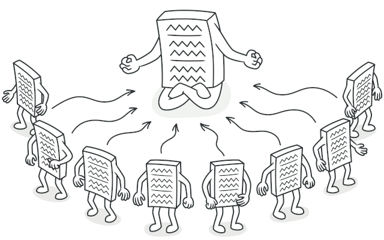

JavaScript
Design Patterns
What is Pattern
What is Software Design Pattern?
- Typical solution to commonly occurring problem in software design
- Pre-made blueprints that you can customize and use in your code
- Not a library or code snippet
- Not an algorithm
- Blueprint, not a recipe
Who invented patterns?
- Patterns are discovered, not invented
- Repeated solution -> Detailed description -> Name
- 1977 - Christopher Alexander. A Pattern Language: Towns, Buildings, Construction
- 1994 - Design Patterns: Elements of Reusable Object-Oriented Software - 23 patterns
- The GoF book
Why should I learn patterns?
- Verified and tested solutions
- Standardized code
- Common Developer Language
Patterns - the hard way

Pattern Types
- Creational
- Structural
- Behavioral
Module Pattern
|
|
(function() {
var message = "Hello";
function showMessage() {
alert( message );
}
showMessage();
}());
Lodash, jQuery (and many others...)
|
|
Pros and Cons
|
|
Singleton

Problem
- Ensure that a class has just a single instance.
- Provide a global access point to that instance.
Real-world Example

Code
const logger = (function () {
let loggerInstance;
function createInstance() {
const instance = new Object('Some logger config');
return instance;
}
return {
getInstance: function () {
// creates instance if it doesn't exist
if (!loggerInstance) {
loggerInstance = createInstance();
}
return loggerInstance;
}
businessLogic: function() {/* ... */}
};
})();
const logger1 = logger.getInstance();
const logger2 = logger.getInstance();
// Outputs: true
console.log(user1 === user2);
Pros and Cons
|
|
Composite
Problem
Solution
Real world example
abstract class Component {
protected parent: Component;
public setParent(parent: Component) {
this.parent = parent;
}
public getParent(): Component {
return this.parent;
}
// Child methods (empty in leafs)
public add(component: Component): void { }
public remove(component: Component): void { }
// Optional method to determine if a component can have children
public isComposite(): boolean {
return false;
}
public getPrice(): number {
//...
};
}
class Leaf extends Component {
constructor(private price: number) {}
public getPrice(): number {
return this.price;
}
}
class Composite extends Component {
protected children: Component[] = [];
public add(component: Component): void {
this.children.push(component);
component.setParent(this);
}
public remove(component: Component): void {
const componentIndex = this.children.indexOf(component);
this.children.splice(componentIndex, 1);
component.setParent(null);
}
public isComposite(): boolean {
return true;
}
public getPrice(): string {
const result: number = 0;
for (const child of this.children) {
results += child.getPrice();
}
return result;
}
}
const simple = new Leaf();
console.log(simple.getPrice());
const tree = new Composite();
const branch1 = new Composite();
branch1.add(new Leaf());
branch1.add(new Leaf());
const branch2 = new Composite();
branch2.add(new Leaf());
tree.add(branch1);
tree.add(branch2);
console.log(tree);
Pros and Cons
|
|
Facade

Problem
|
|
|
Real world example
class Facade {
protected subsystem1: Subsystem1;
protected subsystem2: Subsystem2;
constructor(subsystem1: Subsystem1 = null, subsystem2: Subsystem2 = null) {
this.subsystem1 = subsystem1 || new Subsystem1();
this.subsystem2 = subsystem2 || new Subsystem2();
}
public operation(): string {
result += this.subsystem1.operation1();
result += this.subsystem2.operation1();
// ...
result += this.subsystem1.operationN();
result += this.subsystem2.operationZ();
return result;
}
}
class Subsystem1 {
public operation1(): string {
return 'Subsystem1: Ready!\n';
}
// ...
public operationN(): string {
return 'Subsystem1: Go!\n';
}
}
class Subsystem2 {
public operation1(): string {
return 'Subsystem2: Get ready!\n';
}
// ...
public operationZ(): string {
return 'Subsystem2: Fire!';
}
}
const subsystem1 = new Subsystem1();
const facade = new Facade(subsystem1);
console.log(facade.operation());
Pros and Cons
|
|
Strategy
Problem
Solution

class Context {
private strategy: Strategy;
constructor(strategy: Strategy) {
this.strategy = strategy;
}
public setStrategy(strategy: Strategy) {
this.strategy = strategy;
}
public doSomeBusinessLogic(): void {
// ...
console.log('Context: Sorting data using the strategy (not sure how it\'ll do it)');
const result = this.strategy.doAlgorithm(['a', 'b', 'c', 'd', 'e']);
console.log(result.join(','));
// ...
}
}
interface Strategy {
doAlgorithm(data: string[]): string[];
}
class ConcreteStrategyA implements Strategy {
public doAlgorithm(data: string[]): string[] {
return data.sort();
}
}
class ConcreteStrategyB implements Strategy {
public doAlgorithm(data: string[]): string[] {
return data.reverse();
}
}
// client code
const context = new Context(new ConcreteStrategyA());
context.doSomeBusinessLogic();
context.setStrategy(new ConcreteStrategyB());
context.doSomeBusinessLogic();
Pros and Cons
|
|
If all you have is a hammer, everything looks like a nail.
Further reading
- https://refactoring.guru/design-patterns
- Дизайн-патерни — просто, як двері. Андрій Будай
- http://sourcemaking.com/
Questions?